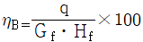
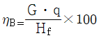
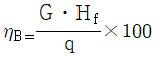
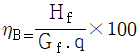
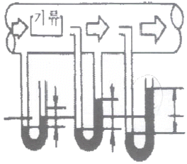
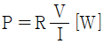
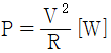

건축설비기사 (2006-09-10 기출문제)
1과목: 건축일반
1. 개구부의 미관과 벽체와의 접합면에서 마무리를 좋게 하기 위하여 둘러대는 누릉대는?
- 연귀
- 문틀
- 문선
- 턱장부
(정답률: 알수없음)

2. 다음 중 철근콘크리트보에 녹근을 사용하는 이유로 가장 알맞은 것은?
- 전단력에 의한 균열 방지를 위하여
- 콘크리트의 온도변화에 따른 균열을 방지하기 위하여
- 인장력에 의한 균열 방지를 위하여
- 콘크리트가 수평방향으로 터져나가는 것을 구속하기 위하여
(정답률: 50%)
3. 쇼핑센터의 종류 중 도심형 쇼핑센터에 대한 설명으로 옳은 않은 것은?
- 특정상권의 사람들을 구매층으로 삼는다.
- 주차공간이 집약되어 있다.
- 지가가 높은 지역에 입지한다.
- 면적 효율상 고층이 되는 경우가 많다.
(정답률: 70%)
4. 다음의 계단에 대한 설명 옳지 않은 것은?
- 높이가 3m를 넘는 계단에는 높이 3m 이내마다 너비 1.2m 이상의 계단창을 설치한다.
- 높이가 1m를 넘는 계단 및 계단창의 양옆에는 난간을 설치한다.
- 계단을 대체하여 설치하는 경사로의 경사도는 1:5를 넘지 않도록 한다.
- 초등학교의 계단인 경우 계단 및 계단창의 너비는 150cm 이상으로 한다.
(정답률: 알수없음)
5. 병동부의 간호단위에 대한 설명 중 틀린 것은?
- 간호사의 보행거리는 24m 이내가 되도록 한다.
- 각 간호단위마다 방문객 대기실, 진료실, 간호사 대기소 등을 설치한다.
- 1개의 간호사 대기소에서 관리할 수 있는 병상수는 30~40개 이하로 한다.
- 병실의 종류는 1인실, 2인실 4인실, 6인실 등을 적절히 배분한다.
(정답률: 42%)
6. 다음 중 시티 호텔(city hotel)에 속하지 않는 것은?
- 공항 호텔(airport hotel)
- 클럽 하우스(club house)
- 부두 호텔(habor hotel)
- 아파트먼트 호텔(apartment hotel)
(정답률: 42%)
7. 벽돌쌓기에서 화란식 쌓기의 경우 모서리 부분에 사용되는 벽돌의 마름질 형태는?
- 칠오토막
- 이오토막
- 반도막
- 반반절
(정답률: 알수없음)
8. 다음의 철근과 콘크리트의 부착력에 관한 기술 중 옳지 않은 것은?
- 콘크리트의 압축강도가 클수록 부착력은 증가한다.
- 부착력은 피복 두께가 얇을수록 감소한다.
- 철근의 표면상태와 단면모양에 따라 부착력이 좌우된다.
- 철근의 주장이 클수록 부착력은 감소한다.
(정답률: 50%)
9. 한식과 양식 주택에 대한 설명 중 옳지 않은 것은?
- 한식주택은 은폐적 실의 조합으로 되어 있다.
- 한식주택은 좌식생활이며, 양식주택은 입식생활이다.
- 한식주택의 실은 단일용도이며, 양식주택의 실은 복합용도이다.
- 한식주택의 가구는 부차적 존재이며, 양식주택의 가구는 주요한 내용물이다.
(정답률: 알수없음)
10. 단위 표면적을 통해 단위 시간에 고체벽의 양측 유체가 단위 온도차일 때 한쪽의 유체에서 다른 쪽 유체로 전달되는 열량을 의미하는 것은?
- 열전도율
- 열관류율
- 열전도저항
- 온도구배
(정답률: 알수없음)
11. 흡음재료 및 구조의 특성을 설명한 내용으로 옳은 것은?
- 공명형 흡음재들은 특정주파수 대역의 흡음을 목적으로 하는 경우에 사용된다.
- 다공질 흡음재는 특히 저주파 대역에서 높은 흡음율을 나타낸다.
- 섬유계열의 흡음재들은 그 두께를 증가시킬수록 저주파 대역의 음에 대한 흡음력이 감소된다.
- 판진동형 흡음재들은 일반적으로 고주파 대역의 음에 대한 높은 흡음력을 나타낸다.
(정답률: 47%)
12. 종합병원에서 클로즈드 시스템(closed system)의 외해 진료부 계획에 대한 설명으로 옳지 않은 것은?
- 부속 진료시설을 인접하게 하여 이용이 편리하게 한다.
- 환자의 이용이 편리하도록 1층 또는 2층 이하에 둔다.
- 내과계통은 진료검사에 시간을 요하므로 소진료실을 다수 설치하는 것보다 대진료실을 1개 설치하는 것이 좋다.
- 실내환경에 대한 배려로서 환자의 심리고통을 덜어줄 수 있는 환경심리적 요인을 반영시킨다.
(정답률: 55%)
13. 다음 중 수용인원 500명인 사무소건축의 소요바닥면적 규모로 가장 적당한 것은?
- 3,000m2
- 5,000m2
- 6,000m2
- 8,000m2
(정답률: 알수없음)
14. 다음 중 절충식 지붕틀에서 사용되지 않는 부재는?
- ㅅ자보
- 종보
- 서까래
- 중도리
(정답률: 40%)
15. 다음 중 결로방지대책과 가장 관계가 먼 것은?
- 적절한 난방
- 적절한 청소
- 적절한 환기
- 적절한 단열
(정답률: 알수없음)
16. 건축화 조명에 대한 설명 중 틀린 것은?
- 코니스 조명은 벽면조명으로 천장과 벽면의 경계부에 설치한다.
- 조명기구를 천장, 벽 등의 실 구성명 중에 장치하여 건축 내장의 일부와 같은 취급을 한 조명방식을 건축화 조명이라 한다.
- 광천장은 천장을 확산투과 혹은 지향성 투과패널로 덮고, 천장 내부에 광원을 일정한 간격으로 배치한 것이다.
- 천장면에 루버를 설치하고 그 속에 광원을 배치하는 방식을 라이트라 한다.
(정답률: 60%)
17. 목구조에 사용되는 가새에 대한 설명 중 잘못된 것은?
- 주요 건물에는 한 방향 가새만으로 부족할 때가 있다.
- 가새는 횡력에 대한 보강재이다.
- 가새의 경사는 45°에 가까울수록 좋다.
- 가새는 불안정한 구조인 세모구조를 안정한 구조인 네모구조로 만들기 위해 사용된다.
(정답률: 63%)
18. 다음 중 백화점 경영에 가장 크게 영향을 미치는 부문은?
- 고객부문
- 상품부문
- 종업원부문
- 판매부문
(정답률: 알수없음)
19. 건물의 하부 전체 또는 지하실 전체를 하나의 기초판으로 구성한 기초로서 매트기초라고도 불리우는 것은?
- 연속기초
- 온통기초
- 독립기초
- 복합기초
(정답률: 알수없음)
20. 새로운 주택 설계의 방향으로서 적당하지 않은 것은?
- 가족생활을 희생시키는 형식적이고 외적인 요인들은 제거하여야 한다.
- 평면에서의 주부의 동선을 길게 한다.
- 능률이 좋은 부엌과 가사실을 갖추도록 한다.
- 주거의 설비를 현대화, 기계화한다.
(정답률: 알수없음)
2과목: 위생설비
21. 기구배수관과 배수관을 직접 연결하지 않고 일단 공간을 둔 후, 일반배수관에 설치한 수수용기에 배수하는 방식은?
- 직접배수
- 우수배수
- 간접배수
- 소벤트 시스템
(정답률: 알수없음)
22. 옥외소화전에 대한 설명 중 옳은 것은?
- 옥외소화전설비의 수원은 그 저수량이 옥외소화전의 설치개수(옥외소화전이 2개 이상 설치된 경우에는 2개)에 6m3를 곱한 양 이상이 되도록 한다.
- 당해 소방대상물에 설치된 옥외소화전(2개 이상 설치된 경우에는 2개의 옥외소화전)을 동시에 사용할 경우 각 옥외소화전의 노즐 선단에서의 방수압력은 1.7kg/cm2 이상이 되도록 한다.
- 호스는 구경 50mm의 것으로 하여야 한다.
- 호스접결구는 소방대상물의 각 부분으로부터 하나의 호스접결구까지의 수평거리가 40m 이하가 되도록 설치하여야 한다.
(정답률: 알수없음)
23. 다음 중 펌프의 분류상 터보형 펌프가 아닌 것은?
- 볼류트 펌프
- 마찰 펌프
- 디퓨져 펌프
- 사류 펌프
(정답률: 알수없음)
24. 트랩의 봉수 파괴원인으로 틀린 것은?
- 자기사이펀 작용
- 지정작용
- 모세관 현상
- 증발 현상
(정답률: 알수없음)
25. 위생기구를 재질 중 위생도기에 대한 설명으로 옳지 않은 것은?
- 강도가 커서 내구력이 있다.
- 오물이 부착되기 어려우며, 청소가 용이하다.
- 산, 알칼리에 침식된다.
- 복잡한 구조의 것을 일체화하여 제작할 수 있다.
(정답률: 알수없음)
26. 급탕량 2,000 L/hr인 저탕조의 가열코일 표면적(m2)은? (단, 급수온도는 10℃, 급탕온도는 60℃, 증기온도는 104℃, 가열코일의 열관류율 K=435kcal/m2h℃)
- 3.33m2
- 4.59m2
- 33.3m2
- 45.9m2
(정답률: 47%)
27. 배수설비에 사용되는 배수트랩과 관련 없는 것은?
- U트랩
- 드럼 트랩
- 리프트 트랩
- 벨 트랩
(정답률: 알수없음)
28. 급탕설비에 대한 설명 중 옳지 않은 것은?
- 배관은 부식을 줄이기 위하여 아연도금 강관을 사용한다.
- 중앙식 급탕설비는 원칙적으로 강제순환방식으로 한다.
- 급탕관의 최상부에는 공기빼기 장치를 설치한다.
- 온도강하 및 급탕수전에서의 온도 불균형이 없고 수시로 원하는 온도의 탕을 얻을 수 있도록 원칙적으로 복관식으로 한다.
(정답률: 알수없음)
29. 다음의 소방시설 중 소화설비에 속하는 것은?
- 옥내소화전설비
- 연결송수관설비
- 연결살수설비
- 자동화재탐지설비
(정답률: 70%)
30. 배관설비에서 신축 이음쇠의 종류가 아닌 것은?
- 벨로우즈형
- 슬리브형
- 루프형
- 플랜지형
(정답률: 알수없음)
31. 다음의 통기관에 대한 설명 중 틀린 것은?
- 결합통기관의 관경은 통기수직관과 배수수직관 중 작은 쪽의 관경 이상으로 한다.
- 도피통기관은 배수ㆍ통기 양 계통간의 공기의 유동을 원활히 하기 위해 설치하는 통기관이다.
- 각개통기관의 관경은 그것이 접속되는 배수관 관경의 1/2 이상으로 한다.
- 신정통기관은 상부로 갈수록 굴뚝효과가 일어나므로 배수수직관의 관경보다 작게 한다.
(정답률: 40%)
32. 연면적 5,000m2의 사무소 건물에 필요한 1일당 급수량은 얼마인가? (단, 유효면적비 60%, 유효면적당 인원 0.15인/m2, 1인 1일당 급수량 100L)
- 30,000 L/d
- 35,000 L/d
- 40,000 L/d
- 45,000 L/d
(정답률: 70%)
33. 대변기 세정수 급수방법 중 플러시 밸브식의 최소급수 관경은?
- 15 mm
- 20 mm
- 25 mm
- 32 mm
(정답률: 알수없음)
34. 캐비테이션의 방지 방법이 아닌 것은?
- 흡수관을 가능한 한 짧고 굵게 함과 동시에 관내에 공기가 체류하지 않도록 배관한다.
- 설계상의 펌프 운전범위내에서 항상 필요 NPSH가 유효 NPSH보다 크게 되도록 배관계획을 한다.
- 흡입 조건이 나쁜 경우는 비속도를 작게하기 위해 회전수가 작은 펌프를 사용한다.
- 양정에 필요 이상의 여유를 주지 않는다.
(정답률: 알수없음)
35. LNG에 관한 설명이 바르지 않은 것은?
- 석유정제과정에서 얻어지는 프로판가스가 주원료이다.
- 액화천연가스를 의미한다.
- 액화온도가 -162℃이며, 무색ㆍ투명한 액체이다.
- 가스의 비중은 0.65~0.69로서 공기보다 가볍다.
(정답률: 알수없음)
36. 먹는물의 수질기준에 관한 설명 중 틀린 것은?
- 색도는 5도를 넘지 아니할 것
- 경도는 300mg/L를 넘지 아니할 것
- 수은은 0.01mg/L를 넘지 아니할 것
- 불소는 1.5mg/L를 넘지 아니할 것
(정답률: 50%)
37. 펌프의 회전수 변화에 따른 유량, 양정, 축동력, 소비전력의 변화를 설명한 내용 중 옳은 것은?
- 회전수를 50% 줄이면, 유량은 50% 증가한다.
- 회전수를 50% 줄이면, 양정은 75% 감소한다.
- 회전수를 50% 줄이면, 축동력은 25% 감소한다.
- 회전수를 50% 줄이면, 소비전력은 50% 감소한다.
(정답률: 50%)
38. 평균 BOD가 200ppm인 가정오수가 하루에 3,000m3 유입되는 오물정화조의 1일 유입 BOD부하량(kg/day)은?
- 300
- 400
- 500
- 600
(정답률: 60%)
39. 급탕장치내의 전수량 3,000 L인 5℃의 물을 60℃까지 가열할 때 물의 팽창량(L)은? (단, 5℃ 물의 비중량은 0.999kg/L, 60℃ 물의 비중량은 0.983kg/L 임.)
- 13
- 26
- 49
- 74
(정답률: 58%)
40. 급수배관 설계 및 시공상의 주의점에 대한 설명 중 옳지 않은 것은?
- 수평배관에는 공기나 오물이 정체하지 않도록 하며, 어쩔수 없이 공기정체가 일어나는 곳에는 공기빼기밸브를, 그리고 각종 오물이 정체하는 곳에는 배수밸브를 설치한다.
- 음료용 급수관과 다른 용도의 배관을 크로스 커넥션(cross connection)해서는 안된다.
- 수격작용(water hammering) 방지를 위해서 기구류 가까이에 통기관을 설치한다.
- 급수관은 수리시에 관 속의 물을 완전히 뺄 수 있도록 기울기를 주도록 한다.
(정답률: 알수없음)
3과목: 공기조화설비
41. 다음 공조방식 중 열매체의 운송동력이 상대적으로 가장 적게 소요되는 것은?
- 2중덕트방식
- 팬코일유니트방식
- 덕트병용 팬코일유니트방식
- 단일덕트 정풍량방식
(정답률: 알수없음)
42. 배관재료와 그것의 일반적인 용도를 나타낸 것 중 옳게 연결된 것은?
- 경질염화비닐관 - 냉매
- 동관 - 증기
- 스테인레스관 - 급수
- 폴리에틸렌관 - 가스
(정답률: 80%)
43. 공조용 열원방식 중 고온수 방식이 증기난방이나 온수난방에 비해 장점이 될 수 없는 것은?
- 배관 직경을 줄일 수 있다
- 예열시간을 줄일 수 있다.
- 대단위 아파트 단지 등에 적합하다.
- 대량의 열을 장거리 수송하는 경우에 적합하다.
(정답률: 30%)
44. 환기설비가 설치된 다음 실 중 실내압력이 정압(+)인 것은?
- 보일러실
- 주방
- 욕실
- 화장실
(정답률: 알수없음)
45. 보일러의 발생열량 q[kcal/h], 연료의 소비량 Gf[kg/h], 연료의 저위발열량 Hf[kcal/h]일 때 보일러의 효율 ηB[%]을 옳게 나타낸 것은?




(정답률: 알수없음)
46. 다음 감습장치의 특성을 나타낸 내용 중 틀린 것은?
- 냉각 감습장치는 냉수를 실내에 직접 분무하여 공기중의 수증기를 응축시키는 것으로 화학적인 감습장치이다.
- 압축 감습장치는 공기를 압축해서 여분의 수분을 응축시키는 방법으로 큰 마력을 요한다.
- 흡수식 감습장치는 트리에틸글리콜 등의 액체 흡수제를 사용하는 것이 많다.
- 흡착식 감습장치는 실리카겔, 활성알루미나 등의 고체 흡착제를 사용한다.
(정답률: 알수없음)
47. 환기회수가 0.5[회/h]일 때 체적이 2,000m3인 실의 환기량 [kg/h]은? (단, 공기밀도 1.2 kg/m3)
- 600 kg/h
- 800 kg/h
- 1,000 kg/h
- 1,200 kg/h
(정답률: 46%)
48. 다음의 송풍기 종류 중에서 저속덕트의 환기 및 공조용으로 일반적으로 가장 많이 사용되는 것은?
- 시로코팬
- 터보팬
- 리미트 로드팬
- 에어 포일팬
(정답률: 알수없음)
49. 다음 중 스모크타워 배연법에 대하여 설명하고 있는 것은?
- 상부개구에서 옥외에 향하여 부력을 이용한 배연
- 배연기오 배연풍도를 사용해서 외부에 연기를 배출
- 풍력에 의한 흡인효과와 부력을 이용한 배연탑을 사용해서 배연
- 연기를 일정구획 내에 한정하도록 피난이 완전히 끝난 뒤에 개구부를 자동적으로 완전밀폐
(정답률: 40%)
50. 체크밸브에 관한 다음 설명 중 부적당한 것은?
- 수직배관에만 사용된다.
- 유체의 역류를 방지하기 위한 것이다.
- 스윙형과 리프트형이 있다.
- 펌프 등 기기의 출구부분에 설치한다.
(정답률: 알수없음)
51. 다음 중 연관이나 황동관을 가장 잘 부식시키는 물은?
- 경도 5ppm 정도의 물
- 경도 90ppm 정도의 물
- 경도 110ppm 정도의 물
- 경도 140ppm 정도의 물
(정답률: 알수없음)
52. 밸브를 개폐할 때 마찰저항이 작고 주로 유체의 개폐목적으로 사용되는 것은 어느 것인가?
- 스윙 밸브
- 앵글 밸브
- 슬루스 밸브
- 글로브 밸브
(정답률: 알수없음)
53. 에너지 절약을 위한 열회수 방법중에서 폐열을 열교환에 의해 직접 이용하는 방식이 아닌 것은?
- 히트 파이프
- 열병합발전
- 전열교환기
- 가변풍량방식
(정답률: 알수없음)
54. 다음 중 보일러의 효율과 관계없는 요소는?
- 연료의 고위발열량
- 발생열량
- 연료소비량
- (출력에너지)/(입력에너지)
(정답률: 50%)
55. 피토관을 이용하여 덕트의 압력을 측정하고자 한다. 측정되는 압력의 순서가 바른 것은?

- 정압 → 전압 → 동압
- 전압 → 동압 → 정압
- 동압 → 전압 → 정압
- 정압 → 동압 → 전압
(정답률: 알수없음)
56. 다음 중 바닥면적당 환기량이 가장 많은 공간은?
- 사무실
- 주택
- 극장
- 호텔객실
(정답률: 알수없음)
57. 태양열 이용 난방방식에서 주 구성요소가 아닌 것은?
- 축열조
- 집열판
- 일사계
- 보조보일러
(정답률: 40%)
58. 다음 중 Fourier 법칙과 관계 있는 것은?
- 열전도
- 열대류
- 열복사
- 열관류
(정답률: 50%)
59. 재순환 공기(10kg/h, 건구온도 15℃, 상대습도 80℃)와 신선한 공기(5kg/h, 건구온도 30℃, 상대습도 60%)의 혼합공기의 온도는?
- 18℃
- 20℃
- 25℃
- 28℃
(정답률: 알수없음)
60. 건물의 냉방부하 구성내용 중에서 현열 부하만을 갖는 것은?
- 태양복사열부하
- 침입외기부하
- 인체발열부하
- 기기발열부하
(정답률: 58%)
4과목: 소방 및 전기설비
61. 전류의 누설이나 감전을 방지하는 역할을 하는 물질은?
- 도체
- 절연체
- 상자성체
- 강자성체
(정답률: 알수없음)
62. LAN(근거리 통신망)의 형상이 아닌 것은?
- Bus형
- Ring형
- Loop형
- T형
(정답률: 알수없음)
63. 에스컬레이터의 기울기는 최대 몇 도 이하여야 하는가?
- 10°
- 20°
- 30°
- 45°
(정답률: 85%)
64. 공조설비의 밸브나 댐퍼의 구동을 위하여 비례제어용으로 주로 사용되는 기기는?
- 히트 펌프
- 서보 모터
- 모듀트럴 모터
- 직동식 전자밸브
(정답률: 알수없음)
65. 이상적인 전류계의 내부저항은 얼마로 가정하는가?
- 0[Ω]
- 100[Ω]
- 1,000[Ω]
- ∞[Ω]
(정답률: 알수없음)
66. 다음 중 오옴의 법칙에 관한 설명으로 옳은 것은?
- 임의의 폐회로내에서의 기전력과 전압강하의 대수의 합은 같다.
- 전압은 전류에 비례한다.
- 전류는 회로의 도중에 만들어지거나 소멸되지 않는다.
- 회로내의 임의의 한점에 들어오고 나가는 전류의 합은 같다.
(정답률: 알수없음)
67. 전열기가 100[V]에서 5[A]가 흐른다. 전력요금이 1[kWh]당 1,500원이라면, 이 전열기를 2시간 사용하였을 때의 전력요금은 얼마인가?
- 1,000원
- 1,500원
- 2,000원
- 2,500원
(정답률: 알수없음)
68. 직류전력을 산출하는 공식이 아닌 것은?

- P=I2R [W]
- P=VI [W]

(정답률: 43%)
69. 광원에서 나가는 전광속 중 피조면에 달하는 광속의 비율을 나타내는 것은?
- 이용률
- 조명률
- 유지률
- 감광보상률
(정답률: 46%)
70. A+AㆍB의 논리식을 부울 대수의 법칙을 이용하여 간소화하면?
- B
- A
- 1
- A+B
(정답률: 50%)
71. 200kVA 단상변압기 3대를 ⧍결선하여 사용하다가 1대의 변압기가 소손되어 V결선으로 운전한다면 몇 kVA 부하까지 연결할 수 있겠는가?
- 450
- 600
- 346
- 692
(정답률: 84%)
72. 다음 중 단상유도전동기의 기동방법이 아닌 것은?
- 셰이딩 코일형
- 콘덴서 기동형
- 분상 기동형
- 2중 농형
(정답률: 37%)
73. 호박(琥珀)을 헝겊으로 문지르면 호박에 전기적 성질을 띠게 되는데 이런 현상을 무엇이라 하는가?
- 쿨롱법칙
- 뉴톤법칙
- 전계현상
- 정전기현상
(정답률: 100%)
74. 분전반에서 전기부하에 이르는 배선을 무엇이라고 하는가?
- 분기 회로
- 급전선
- 간선
- 배전선
(정답률: 알수없음)
75. 제어 목표값과 현재값과의 변화율을 이용하여 오버슈트 혹은 언더슈트 등을 감소시켜 과도상태의 편차를 제거하고 외란 등에 대하여 시스템의 안정도를 증가시키는 제어 동작은?
- 미분제어동작
- 적분제어동작
- 비례제어동작
- 단속도(floating)제어동작
(정답률: 50%)
76. 패러드(farad) [F]는 무엇을 나타내는 단위인가?
- 정전용량
- 자속밀도
- 투자율
- 전력
(정답률: 64%)
77. 전류가 흐를 때 방생하는 현상이 아닌 것은?
- 압력이 발생한다.
- 열이 발생한다.
- 전기분해 등과 같은 화학변화가 발생한다.
- 자석의 힘이 발생한다.
(정답률: 72%)
78. 충전 완료한 납축전지의 양극은?
- Pb2O
- PbO
- PbO2
- Pb3O4
(정답률: 알수없음)
79. 정풍량 방식에서 냉난방 밸브의 제어기준이 되는 현재 실내의 온ㆍ습도를 측정하는 온ㆍ습도 검출기는?
- 외기측 온ㆍ습도 검출기
- 급기축 온ㆍ습도 검출기
- 혼합기축 온ㆍ습도 검출기
- 환기측 온ㆍ습도 검출기
(정답률: 알수없음)
80. 변압기의 1차 코일 회수가 120회, 2차 코일 회수가 480회 일 때, 2차 코일 측의 전압이 100[V] 이면 1차 전압은 몇 [V]인가?
- 10
- 15
- 25
- 50
(정답률: 알수없음)
5과목: 건축설비관계법규
81. 다음 중 건축법상 방화구획의 설치기준에 대한 설명으로 옳지 않은 것은?
- 10층 이하의 층은 바닥면적 1천제곱미터 이내마다 구획할 것
- 3층 이상의 층과 지하층을 층마다 구획할 것
- 11층 이상의 층은 바닥면적 200제곱미터 이내마다 구획할 것
- 11층 이상의 층으로 벽 및 반자의 실내에 접하는 부분의 마감을 불연재료로 한 경우에는 바닥면적 600제곱미터 이내마다 구획할 것
(정답률: 알수없음)
82. 에너지이용합리화기본계획에 관한 기술 중 틀린 것은?
- 기본계획은 매 3년마다 수립하여야 한다.
- 기본계획을 수립하고자 하는 경우에는 관계행정기관의 장과 협의하여야 한다.
- 에너지이용합리화를 위한 기술개발에 관한 내용이 포함되어야 한다.
- 에너지절약형 경제구조로의 전환에 관한 내용이 포함되어야 한다.
(정답률: 46%)
83. 다음 중 방염성능기준 이상의 실내장식물 등을 설치하여야 하는 특정소방대상물이 아닌 것은?
- 호텔
- 기숙사
- 방송국
- 촬영소
(정답률: 알수없음)
84. 건축법에 의해 건축물에 설치하는 지하층의 구조 및 설비에 관한 기준으로 적합하지 않은 것은?
- 거실의 바닥면적이 50제곱미터 이상인 층에는 직통계단외에 피난층 또는 지상으로 통하는 비상탈출구 및 환기통을 설치할 것
- 바닥면적이 1,000제곱미터 이상인 층에는 피난층 또는 지상으로 통하는 직통계단을 피난계단 또는 특별피난계단의 구조로 할 것
- 거실의 바닥면적 합계가 1,000제곱미터이상인 층에는 환기설비를 설치할 것
- 지하층의 바닥면적이 200제곱미터 이상인 층에는 식수공급을 위한 급수전을 1개소 이상 설치할 것
(정답률: 30%)
85. 옥외소화전설비를 설치하여야 할 특정소방대상물의 기준으로 옳은 것은?
- 지상 1층 및 2층의 바닥면적의 합계가 3,000m2이상인 것
- 지상 1층 및 2층의 바닥면적의 합계가 6,000m2이상인 것
- 지상 1층 및 2층의 바닥면적의 합계가 7,000m2이상인 것
- 지상 1층 및 2층의 바닥면적의 합계가 9,000m2이상인 것
(정답률: 알수없음)
86. 건축물의 바깥쪽에 설치하는 피난계단의 구조에 관한 기술 중 틀린 것은?
- 계단은 그 계단으로 통하는 출입구외의 창문 등으로부터 1M 이상의 거리를 두고 설치할 것
- 건축물의 내부에서 계단으로 통하는 출입구에는 갑종방화문 또는 을종방화문을 설치할 것
- 계단의 유효너비는 0.9m 이상으로 할 것
- 계단은 내화구조로 하고 지상까지 직접 연결되도록 할 것
(정답률: 알수없음)
87. 건축허가 신청시 에너지절약계획서를 제출해야 할 건축물은 다음 중 어느 것인가?
- 연면적 400m2인 일반목욕장
- 연면적 1,800m2인 병원
- 연면적 2,200m2인 호텔
- 연면적 2,800m2인 사무실 건물
(정답률: 알수없음)
88. 토양침투처리방법에 의한 단독정화조의 방류수 수질기준에서 1차 처리장치를 거쳐 토양침투시킬 때의 방류수의 부유물질량은 얼마 이하로 하여야 하는가?
- 20mg/ℓ
- 65mg/ℓ
- 100mg/ℓ
- 250mg/ℓ
(정답률: 알수없음)
89. 자동화재탐지설비를 설치하여야 할 동식물관련시설의 최소연면적은?
- 2,000m2
- 3,000m2
- 4,000m2
- 5,000m2
(정답률: 15%)
90. 연면적이 최소 몇 m2를 초과하는 건축물에 설치하는 계단 및 복도는 건설교통부령이 정하는 기준에 적합하게 설치하여야 하는가?
- 200m2
- 250m2
- 300m2
- 400m2
(정답률: 알수없음)
91. 건축물의 7층에 설치하는 직통계단에서 그 중 1개소 이상을 특별피난계단으로 설치하여야 하는 당해 층의 용도로 옳은 것은?
- 판매시설중 도매시장
- 숙박시설중 호텔
- 위락시설중 무도장
- 업무시설중 사무소
(정답률: 알수없음)
92. 산업표준화법에 의한 한국산업규격이 정하는 바에 의하여 시험한 결과 난연 1급에 해당하는 건축재료를 무엇이라 하는가?
- 불연재료
- 난연재료
- 내수재료
- 준불연재료
(정답률: 46%)
93. 지하가(터널 제외)의 연면적이 최소 몇 제곱미터 이상이면 제연설비를 설치하여야 하는가?
- 1,000제곱미터
- 1,500제곱미터
- 2,000제곱미터
- 3,000제곱미터
(정답률: 알수없음)
94. “지하층”이라 함은 건축물의 바닥이 지표면 아래에 있는 층으로서 그 바닥으로부터 지표면까지의 평균높이가 당해 층높이의 얼마 이상인 것을 말하는가?
- 층높이의 1/4
- 층높이의 3/4
- 층높이의 1/2
- 층높이의 2/3
(정답률: 75%)
95. 다음 중 에너지절약 전문기업이 국가의 지원을 받을 수 있는 사업이 아닌 것은?
- 대체에너지원의 개발사업
- 에너지절약의 홍보사업
- 에너지절약형 시설투자에 관한 사업
- 에너지절약형 기자재의 연구개발사업
(정답률: 60%)
96. 다음 중 18세대의 다세대 주택 급수관의 최소지름으로 맞는 것은?
- 20mm
- 30mm
- 40mm
- 50mm
(정답률: 알수없음)
97. 국가에너지절약추진위원회의 위원장 및 위원수와 관련하여 그 기준이 옳은 것은?
- 위원장 - 국무총리, 위원수 = 25인 이내
- 위원장 - 산업자원부장관, 위원수 - 25인 이내
- 위원장 - 산업자원부장관, 위원수 - 20인 이내
- 위원장 - 국무총리, 위원수 = 20인 이내
(정답률: 알수없음)
98. 에너지의 합리적 이용을 기하기 위하여 에너지이용 합리화에 관한 기본계획은 누가 수립하는가?
- 대통령
- 에너지관리공단 이사장
- 산업자원부장관
- 건설교통부장관
(정답률: 알수없음)
99. 태양열을 이용하는 주택의 건축면적 산정방법 기준으로 옳은 것은?
- 외벽 중 외측벽의 중심선
- 외벽 중 공간부분의 중심선
- 외벽 중 내측 내력벽의 중심선
- 외측벽을 합한 두께의 중심선
(정답률: 알수없음)
100. 다음 용어의 설명으로 옳지 않은 것은?
- “오수처리시설”은 오수를 침전ㆍ분해하여 정화하는 시설로서 단독정화조를 포함한다.
- “단독정화조”는 수세식 화장실에서 나오는 오수를 침전ㆍ분해하여 정화하는 시설을 말한다.
- “퇴비화시설”은 축산폐수를 발효하여 퇴비로 만드는 축산폐수처리시설을 말한다.
- “축산폐수처리시설”은 축산폐수를 침전ㆍ분해하여 처리하는 시설을 말한다.
(정답률: 알수없음)